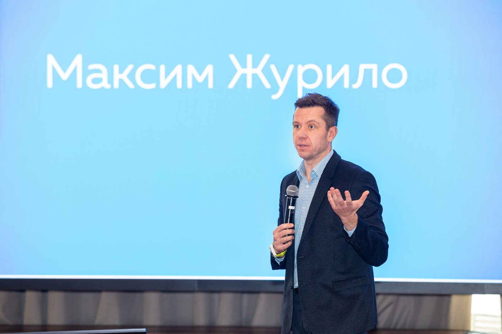
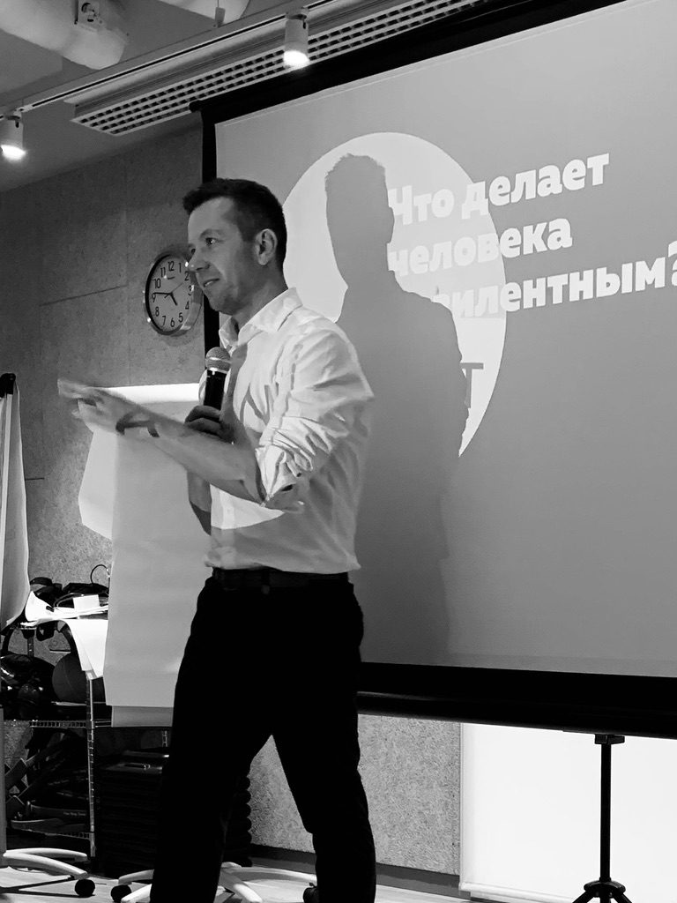
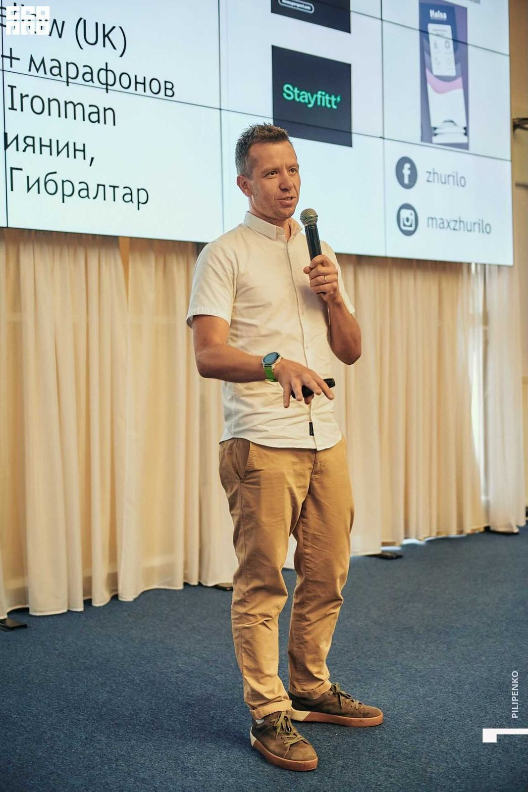
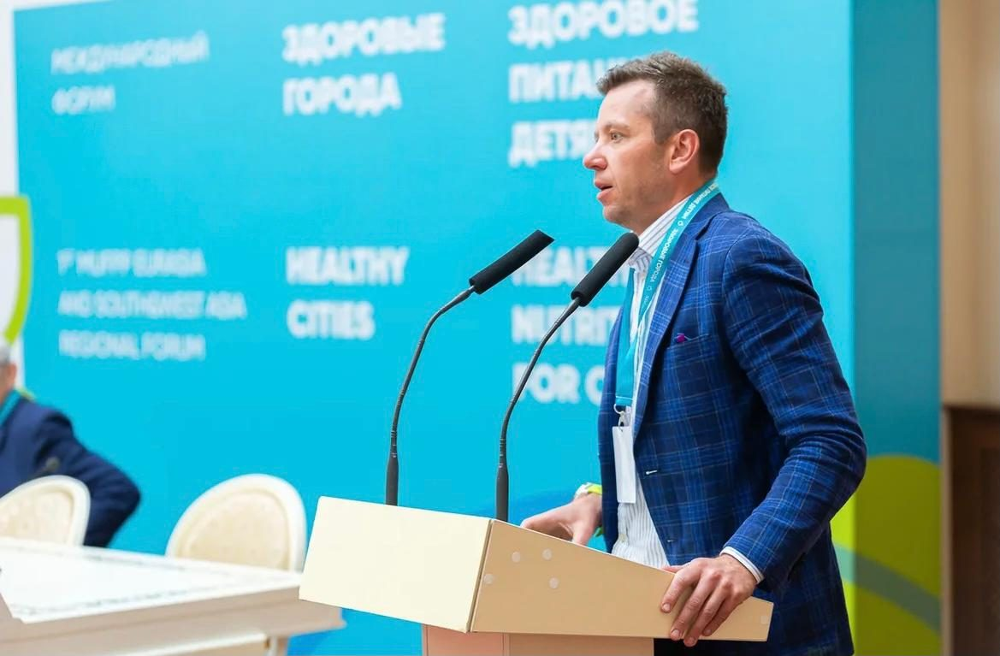
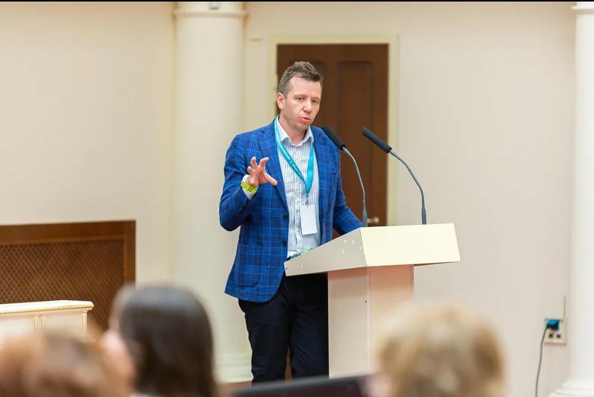
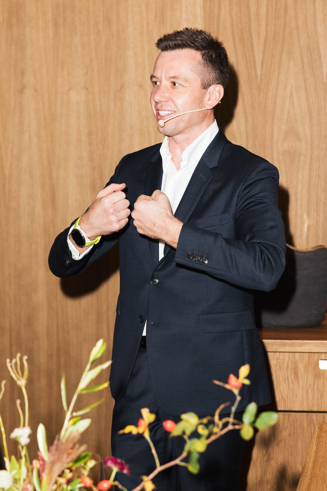
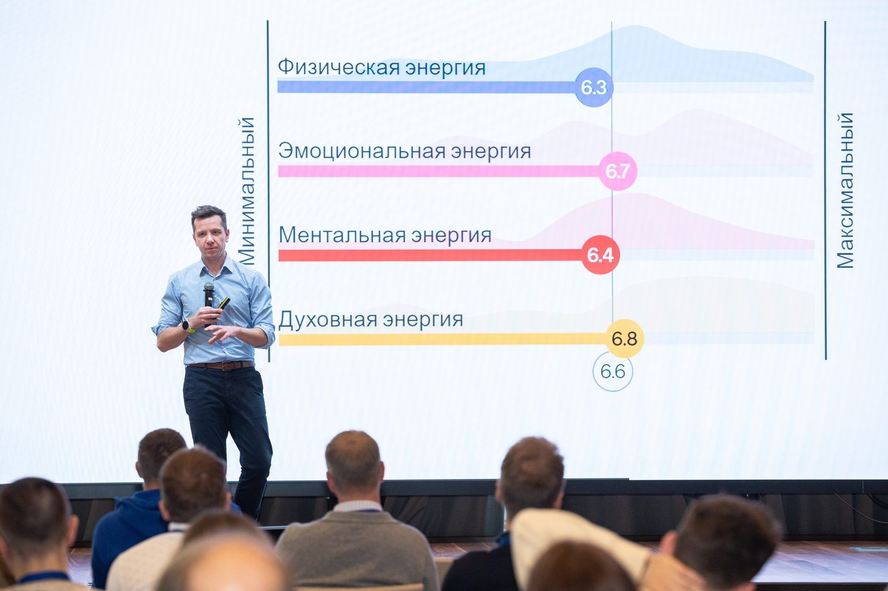
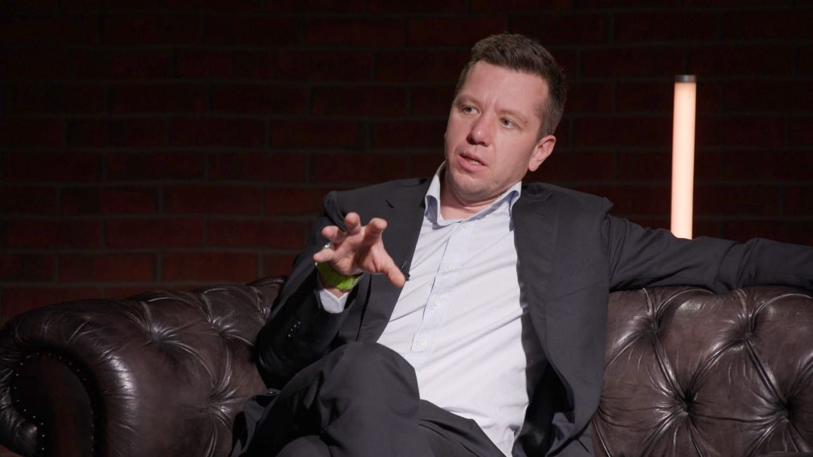

My name is Max Zhurilo
I live in Oxford, UK. Entrepreneur, speaker, AI enthusiast and someone who loves sport.
Co-founder, Bindary
These days I build AI agents that take the routine off people’s hands, so they have more time for what they love.
Bindary is an AI-native placement platform for specialty insurance: agents structure each risk and take it to the London market.
Companies
Serial entrepreneur, six companies so far. The part I enjoy most is zero to one: turning an idea into a working business.
- BindaryNow
- AI agents that place specialty insurance risks in London
- I Love Supersport
- Running, swimming and cycling schools in seven countries
- Ironstar
- International triathlon series
- Halsa
- Personalised vitamins and supplements
- Stayfitt
- Corporate sport and wellbeing app for companies in the CIS
- Stayf
- The international version of Stayfitt. Its clients have included AstraZeneca and Mars, and in 2026 Entrepreneur UK named it one of 100 start-ups to watch.
Speaking
Talks for companies, business schools and conferences.
The usual themes: what endurance sport teaches about running a business, how to start something from zero, and what AI agents change in everyday work. To invite me to speak, send me an email.








Endurance
The first Russian to swim across the Strait of Gibraltar.
Sport has been a big part of my life: seven Ironman-distance triathlons, three of them extreme (Norseman, Swissman and Celtman), and all seven World Marathon Majors.
Education
- University of Oxford
- Master of Public Policy, Blavatnik School of Government. Weidenfeld-Hoffmann Scholar.
- Moscow Engineering Physics Institute
- BSc in Applied Mathematics, MSc in Computer Science and Engineering.